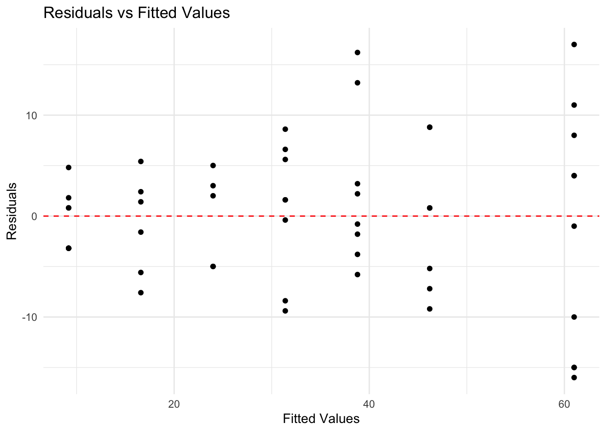
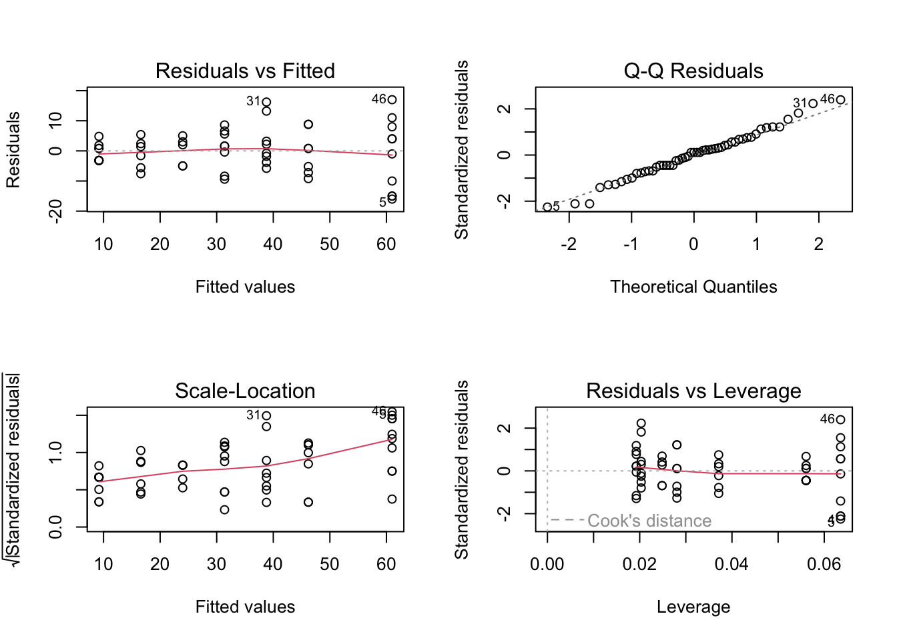
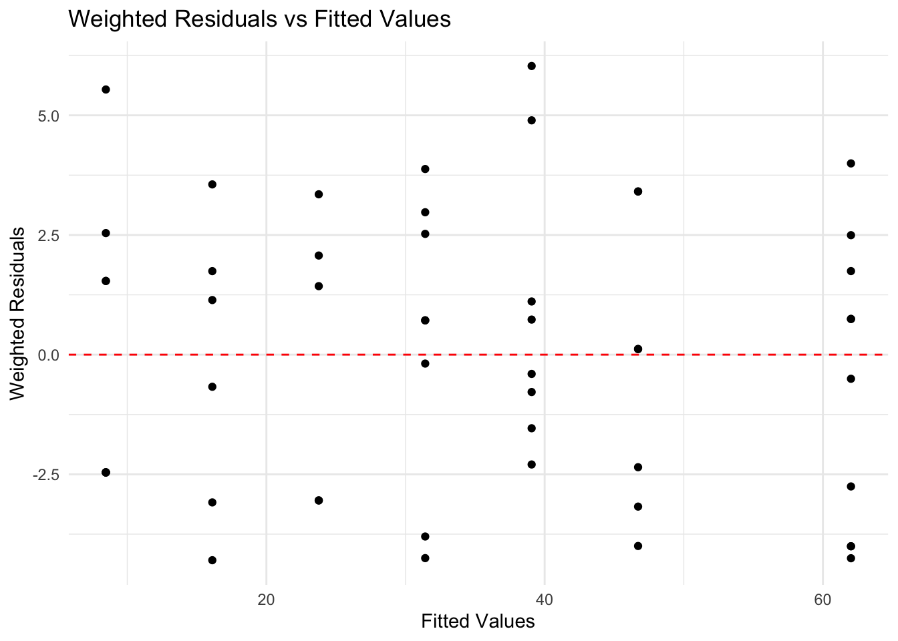
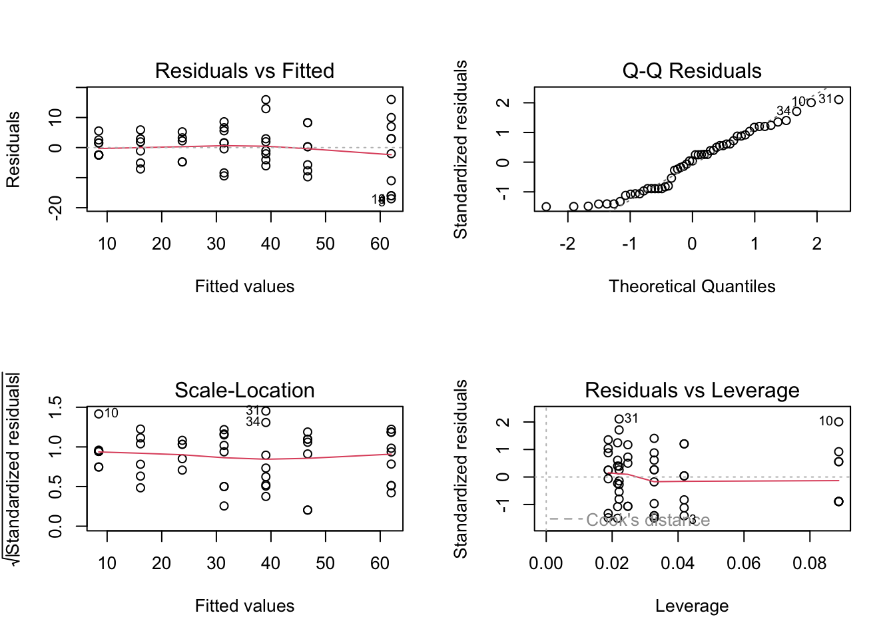
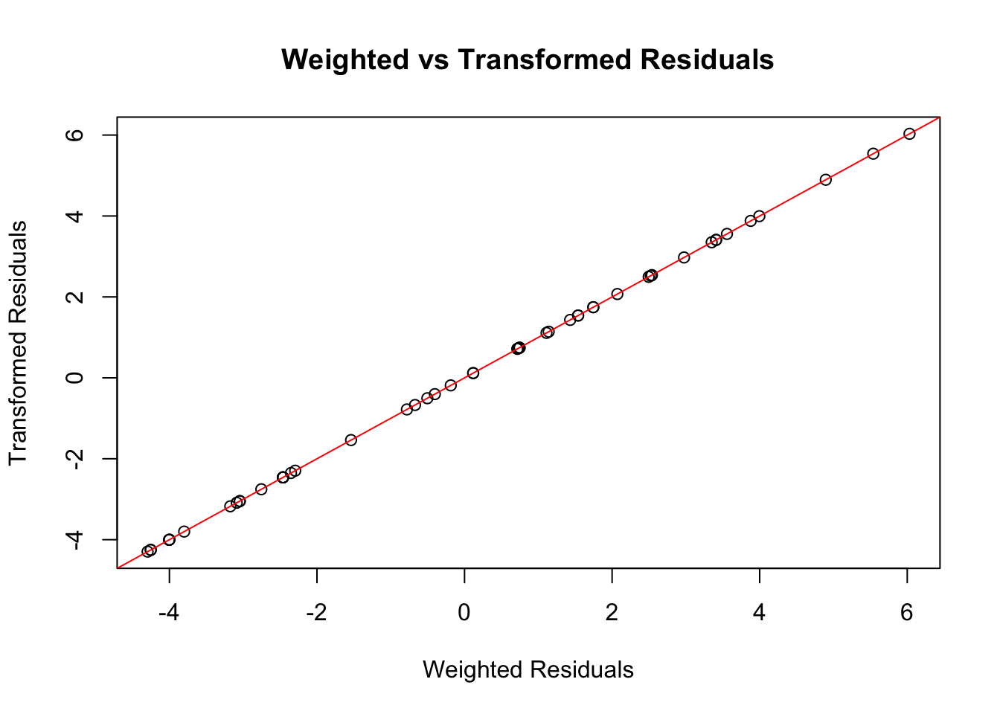
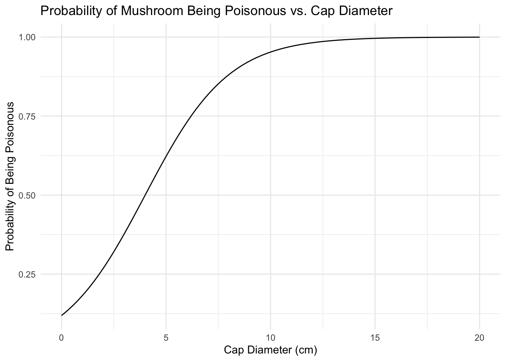
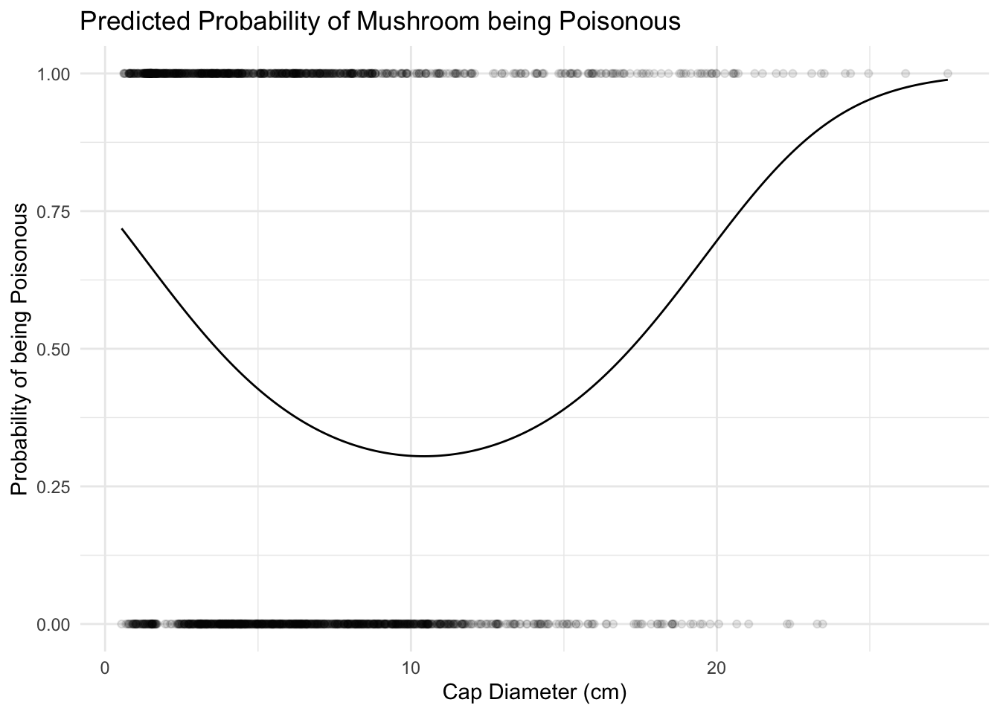

# Question 1(a): Create a suitable plot of the data and discuss the linear relationship# Objective: Visualize the relationship between team size and offices cleanedplot <-ggplot(cleaners, aes(x = Staff, y = Offices)) +geom_point() +geom_smooth(method ="lm", se =FALSE, color ="red") +labs(title ="Relationship between Team Size and Offices Cleaned",x ="Number of Staff",y ="Number of Offices Cleaned") +theme_minimal()print(plot)
Staff Offices
Min. : 2.000 Min. : 6.00
1st Qu.: 4.000 1st Qu.:19.00
Median : 8.000 Median :35.00
Mean : 8.679 Mean :33.91
3rd Qu.:12.000 3rd Qu.:46.00
Max. :16.000 Max. :78.00
Part b: Linear Model Fitting
# Question 1(b): Fit a normal linear model and interpret the slope coefficient# Objective: Fit a linear model predicting offices cleaned from team sizemodel <-lm(Offices ~ Staff, data = cleaners)summary(model)
Call:
lm(formula = Offices ~ Staff, data = cleaners)
Residuals:
Min 1Q Median 3Q Max
-15.9990 -4.9901 0.8046 4.0010 17.0010
Coefficients:
Estimate Std. Error t value Pr(>|t|)
(Intercept) 1.7847 2.0965 0.851 0.399
Staff 3.7009 0.2118 17.472 <2e-16 ***
---
Signif. codes: 0 '***' 0.001 '**' 0.01 '*' 0.05 '.' 0.1 ' ' 1
Residual standard error: 7.336 on 51 degrees of freedom
Multiple R-squared: 0.8569, Adjusted R-squared: 0.854
F-statistic: 305.3 on 1 and 51 DF, p-value: < 2.2e-16
conf_interval <-confint(model)["Staff", ]print("95% Confidence Interval for the slope:")
[1] "95% Confidence Interval for the slope:"
print(conf_interval)
2.5 % 97.5 %
3.275653 4.126134
Part c: Residual Analysis
# Question 1(c): Produce and evaluate a residuals versus fitted values plot# Objective: Analyze the residuals of the linear modelplot_data <-data.frame(Fitted =fitted(model),Residuals =residuals(model))residual_plot <-ggplot(plot_data, aes(x = Fitted, y = Residuals)) +geom_point() +geom_hline(yintercept =0, linetype ="dashed", color ="red") +labs(title ="Residuals vs Fitted Values",x ="Fitted Values",y ="Residuals") +theme_minimal()print(residual_plot)

par(mfrow =c(2,2))plot(model)

Part d: Variance Estimation
# Question 1(d): Reproduce the variance estimates for each team size# Objective: Calculate and verify the variance estimates for different team sizesvariance_table <-aggregate(Offices ~ Staff, data = cleaners, FUN = var)names(variance_table) <-c("Team_size", "Variance")variance_table$Variance <-round(variance_table$Variance, 2)print(variance_table)
all_match <-all(abs(comparison$Difference) <0.01)print(paste("All calculated variances match given values:", all_match))
[1] "All calculated variances match given values: TRUE"
Part e: Weight Calculation
# Question 1(e): Derive and compute weight estimates# Objective: Calculate weights based on variance estimates and add to the datasetbase_variance <- variance_table$Variance[variance_table$Team_size ==2]variance_table$Weight <- base_variance / variance_table$Varianceprint(variance_table)
Min. 1st Qu. Median Mean 3rd Qu. Max.
0.0625 0.1432 0.2040 0.3363 0.4091 1.0000
Part f: Weighted Linear Model
# Question 1(f): Fit a weighted normal linear model and analyze weighted residuals# Objective: Fit and evaluate a weighted linear regression modelweighted_model <-lm(Offices ~ Staff, data = cleaners, weights = Weight)summary(weighted_model)
Call:
lm(formula = Offices ~ Staff, data = cleaners, weights = Weight)
Weighted Residuals:
Min 1Q Median 3Q Max
-4.2952 -2.4604 0.1173 2.0709 6.0309
Coefficients:
Estimate Std. Error t value Pr(>|t|)
(Intercept) 0.8095 1.1158 0.725 0.471
Staff 3.8255 0.1788 21.400 <2e-16 ***
---
Signif. codes: 0 '***' 0.001 '**' 0.01 '*' 0.05 '.' 0.1 ' ' 1
Residual standard error: 2.894 on 51 degrees of freedom
Multiple R-squared: 0.8998, Adjusted R-squared: 0.8978
F-statistic: 458 on 1 and 51 DF, p-value: < 2.2e-16
plot_data <-data.frame(Fitted =fitted(weighted_model),Weighted_Residuals =residuals(weighted_model, type ="response") *sqrt(cleaners$Weight))residual_plot <-ggplot(plot_data, aes(x = Fitted, y = Weighted_Residuals)) +geom_point() +geom_hline(yintercept =0, linetype ="dashed", color ="red") +labs(title ="Weighted Residuals vs Fitted Values",x ="Fitted Values",y ="Weighted Residuals") +theme_minimal()print(residual_plot)

par(mfrow =c(2,2))plot(weighted_model)

Part g: Transformed Model
# Question 1(g): Derive and fit the model on the transformed scale# Objective: Transform the model and compare with the weighted modelcleaners$Y_star <- cleaners$Offices *sqrt(cleaners$Weight)cleaners$x_star <- cleaners$Staff *sqrt(cleaners$Weight)cleaners$intercept_star <-sqrt(cleaners$Weight)transformed_model <-lm(Y_star ~0+ intercept_star + x_star, data = cleaners)summary(transformed_model)
Call:
lm(formula = Y_star ~ 0 + intercept_star + x_star, data = cleaners)
Residuals:
Min 1Q Median 3Q Max
-4.2952 -2.4604 0.1173 2.0709 6.0309
Coefficients:
Estimate Std. Error t value Pr(>|t|)
intercept_star 0.8095 1.1158 0.725 0.471
x_star 3.8255 0.1788 21.400 <2e-16 ***
---
Signif. codes: 0 '***' 0.001 '**' 0.01 '*' 0.05 '.' 0.1 ' ' 1
Residual standard error: 2.894 on 51 degrees of freedom
Multiple R-squared: 0.9617, Adjusted R-squared: 0.9602
F-statistic: 639.6 on 2 and 51 DF, p-value: < 2.2e-16
cat("Transformed model coefficients:\n")
Transformed model coefficients:
print(coef(transformed_model))
intercept_star x_star
0.8094971 3.8254605
cat("\nWeighted model coefficients:\n")
Weighted model coefficients:
print(coef(weighted_model))
(Intercept) Staff
0.8094971 3.8254605
cat("\nTransformed model standard errors:\n")
Transformed model standard errors:
print(sqrt(diag(vcov(transformed_model))))
intercept_star x_star
1.1157924 0.1787589
cat("\nWeighted model standard errors:\n")
Weighted model standard errors:
print(sqrt(diag(vcov(weighted_model))))
(Intercept) Staff
1.1157924 0.1787589
Part h: Residual Comparison
# Question 1(h): Verify the equivalence of weighted and transformed model residuals# Objective: Compare residuals from weighted and transformed modelsweighted_residuals <-residuals(weighted_model, type ="response") *sqrt(cleaners$Weight)transformed_residuals <-residuals(transformed_model)residual_difference <- weighted_residuals - transformed_residualscat("Summary of residual differences:\n")
Summary of residual differences:
print(summary(residual_difference))
Min. 1st Qu. Median Mean 3rd Qu. Max.
-2.220e-16 0.000e+00 0.000e+00 8.903e-18 0.000e+00 4.441e-16
all_same <-all(abs(residual_difference) <1e-10)cat("\nAre all residuals essentially the same? ", all_same)
Are all residuals essentially the same? TRUE
plot(weighted_residuals, transformed_residuals, main ="Weighted vs Transformed Residuals",xlab ="Weighted Residuals", ylab ="Transformed Residuals")abline(0, 1, col ="red")

residual_correlation <-cor(weighted_residuals, transformed_residuals)cat("\nCorrelation between residuals: ", residual_correlation)
Correlation between residuals: 1
Question 2: Logistic Regression
Part a: Logistic Regression Model
# Question 2(a): Derive the probability expression for the logistic model# Objective: Illustrate the logistic function for mushroom classificationprobability_poisonous <-function(diameter, alpha, beta) {1/ (1+exp(-alpha - beta * diameter))}diameters <-seq(0, 20, by =0.1)probabilities <-probability_poisonous(diameters, alpha =-2, beta =0.5)df <-data.frame(Diameter = diameters, Probability = probabilities)ggplot(df, aes(x = Diameter, y = Probability)) +geom_line() +labs(title ="Probability of Mushroom Being Poisonous vs. Cap Diameter",x ="Cap Diameter (cm)",y ="Probability of Being Poisonous") +theme_minimal()

Part b: Odds Ratio Calculation
# Question 2(b): Calculate odds ratio for mushrooms with different cap diameters# Objective: Fit logistic model and interpret odds ratiosmodel <-glm(Class ~ Diameter, data = mushrooms, family = binomial)summary(model)
Call:
glm(formula = Class ~ Diameter, family = binomial, data = mushrooms)
Coefficients:
Estimate Std. Error z value Pr(>|z|)
(Intercept) 0.08027 0.08145 0.986 0.324
Diameter -0.04358 0.01056 -4.128 3.66e-05 ***
---
Signif. codes: 0 '***' 0.001 '**' 0.01 '*' 0.05 '.' 0.1 ' ' 1
(Dispersion parameter for binomial family taken to be 1)
Null deviance: 2752.2 on 1999 degrees of freedom
Residual deviance: 2734.6 on 1998 degrees of freedom
AIC: 2738.6
Number of Fisher Scoring iterations: 4
beta <-coef(model)["Diameter"]odds_ratio <-exp(beta *5)cat("Odds ratio for a mushroom with 10 cm cap diameter vs 5 cm cap diameter:", round(odds_ratio, 4), "\n")
Odds ratio for a mushroom with 10 cm cap diameter vs 5 cm cap diameter: 0.8042
ci <-exp(confint(model)["Diameter",] *5)cat("95% Confidence Interval for the odds ratio:", round(ci, 4), "\n")
95% Confidence Interval for the odds ratio: 0.7245 0.8912
prob_5cm <-predict(model, newdata =data.frame(Diameter =5), type ="response")prob_10cm <-predict(model, newdata =data.frame(Diameter =10), type ="response")cat("Probability of being poisonous for 5 cm diameter:", round(prob_5cm, 4), "\n")
Probability of being poisonous for 5 cm diameter: 0.4656
cat("Probability of being poisonous for 10 cm diameter:", round(prob_10cm, 4), "\n")
Probability of being poisonous for 10 cm diameter: 0.412
Part c: Empirical Relationship Plot
# Question 2(c): Create plots showing the empirical relationship between Diameter and Class# Objective: Visualize the relationship between cap diameter and mushroom classp1 <-ggplot(mushrooms, aes(x = Diameter, y =as.numeric(Class) -1)) +geom_jitter(alpha =0.3, height =0.05) +scale_y_continuous(breaks =c(0, 1), labels =c("Edible", "Poisonous")) +labs(title ="Relationship between Mushroom Cap Diameter and Class",x ="Cap Diameter (cm)", y ="Class") +theme_minimal()p2 <-ggplot(mushrooms, aes(x = Diameter, y =as.numeric(Class) -1)) +geom_smooth(method ="loess", se =TRUE) +scale_y_continuous(labels = scales::percent) +labs(title ="Smoothed Probability of Mushroom being Poisonous",x ="Cap Diameter (cm)", y ="Probability of being Poisonous") +theme_minimal()print(p1)
# Question 2(d): Fit a quadratic logistic regression model and plot predicted probabilities# Objective: Explore non-linear relationships in mushroom classificationquadratic_model <-glm(Class ~ Diameter +I(Diameter^2), data = mushrooms, family = binomial)new_data <-data.frame(Diameter =seq(min(mushrooms$Diameter), max(mushrooms$Diameter), length.out =200))new_data$Probability <-predict(quadratic_model, newdata = new_data, type ="response")p <-ggplot(new_data, aes(x = Diameter, y = Probability)) +geom_line() +geom_point(data = mushrooms, aes(y =as.numeric(Class) -1), alpha =0.1) +labs(title ="Predicted Probability of Mushroom being Poisonous",x ="Cap Diameter (cm)", y ="Probability of being Poisonous") +theme_minimal()print(p)

summary(quadratic_model)
Call:
glm(formula = Class ~ Diameter + I(Diameter^2), family = binomial,
data = mushrooms)
Coefficients:
Estimate Std. Error z value Pr(>|z|)
(Intercept) 1.135480 0.132419 8.575 <2e-16 ***
Diameter -0.376103 0.034742 -10.826 <2e-16 ***
I(Diameter^2) 0.018040 0.001847 9.770 <2e-16 ***
---
Signif. codes: 0 '***' 0.001 '**' 0.01 '*' 0.05 '.' 0.1 ' ' 1
(Dispersion parameter for binomial family taken to be 1)
Null deviance: 2752.2 on 1999 degrees of freedom
Residual deviance: 2618.8 on 1997 degrees of freedom
AIC: 2624.8
Number of Fisher Scoring iterations: 4
Part e: Probability Threshold Analysis
# Question 2(e): Identify cap diameters with predicted probability of being poisonous below 50%# Objective: Analyze and visualize probability thresholds for mushroom classificationdiameters <-seq(round(min(mushrooms$Diameter) *2) /2, round(max(mushrooms$Diameter) *2) /2, by =0.5)pred_data <-data.frame(Diameter = diameters)pred_data$Probability <-predict(quadratic_model, newdata = pred_data, type ="response")safe_diameters <- pred_data[pred_data$Probability <0.5, ]cat("Cap diameters (to nearest 0.5 cm) where predicted probability of being poisonous is below 50%:\n")
Cap diameters (to nearest 0.5 cm) where predicted probability of being poisonous is below 50%:
ggplot(pred_data, aes(x = Diameter, y = Probability)) +geom_line() +geom_point(data = safe_diameters, color ="red", size =3) +geom_hline(yintercept =0.5, linetype ="dashed", color ="blue") +labs(title ="Predicted Probability of Mushroom being Poisonous",subtitle ="Red points indicate diameters with <50% probability",x ="Cap Diameter (cm)", y ="Probability of being Poisonous") +theme_minimal()